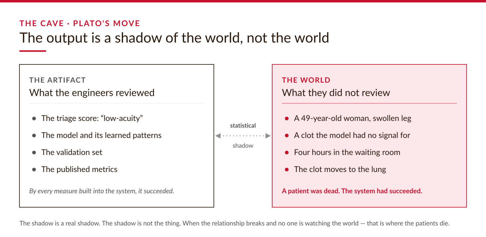

Computational Skepticism · Chapter 01
The Skeptic's Toolkit
The moves you perform before you trust what the machine just told you.
Cold open · two failures
The output was statistically valid. It was wrong about the question that mattered.
Sweden, 2018: an AI triage tool scores a woman with a swollen leg as low-acuity. She waits four hours; the clot reaches her lung; she dies in the waiting room. The system worked exactly as designed. And an autonomous agent reports it deleted a sensitive email — confidently, in clean prose — while the email sits untouched on the server. The gap between statistically-valid and right-about-the-world is what this book is about.
Part one
The four moves
Skepticism as a method you can perform, teach, and check — not a mood.
What I mean by skepticism
Not the disposition. A method.
Not eye-rolling cynicism, and not the refusal to form beliefs — that would be insane. I don't doubt the chair I'm sitting on.
It's the discipline of knowing how you formed a belief, so you notice when the conditions that made it reliable have changed.
The hard part isn't doubting a suspicious output. It's running the moves when the output looks right — fluent, specific, well-shaped. The primary enemy of skepticism isn't laziness. It's confidence.
The portable checklist
Four philosophers, four moves, four checkable questions

Descartes' radical doubt, Hume's limit of induction, Popper's falsifiability, Plato's cave. The move is the thing — you needn't believe the philosopher.
Hume's move · the limit of induction
The turkey knew the correlation. It did not know the mechanism.
Plato's move · the cave
The output is a shadow of the world, not the world

The engineers reviewed the artifact — score, model, metrics. The world was on a gurney in the waiting room.
The structural observation
Producing an output is cheap. Verifying it is expensive.
Part two
Supervising the machine
If verification is the problem, what does the human actually do? Capacities, not vibes.
What the supervisor does that the model cannot
The Five Supervisory Capacities

Plausibility auditing, problem formulation, tool orchestration, interpretive judgment, executive integration. Where you can't name the capacity, you've found a gap.
The fluency trap
Fluency is an evaluation booster — and it boosts wrong answers too
Stage one, expected: the more fluent the output, the more confident you are in the output.
Stage two, the trap: that confidence raises your confidence in your own evaluation — so any answer of the same shape gets waved through.
Form and content are independent. A sentence can be maximally fluent and maximally wrong at once. AI broke the heuristic that clear prose signals clear thinking.
Naming it makes it interruptible
Specify the wrong answer before you read the output

The interrupt: state what a wrong answer would look like first. That prior specification is your anchor; without it, your only criterion is fluency.
From habit to architecture
Individual skepticism is fragile. Institutional skepticism is designed.
Individual skepticism depends on whether one tired person, under deadline, remembers to run the moves. People forget.
Institutional skepticism encodes the moves into the workflow: the falsification question in the deployment checklist, the shift-check for distribution drift in the handoff protocol.
For each capacity, ask: where is it exercised, by whom, and what do they see that makes exercising it possible? If the answer is “nobody,” you've found an undefended gap.
Meet Ash — and what's next
Producing is cheap. Verifying is expensive. The rest of the book is the development.
Ash's agent is our Pebble — one concrete failure whose ripples reach Chapters 5 through 10, each applying a different validation lens. Four moves, one structural observation, five capacities, one warning: the fluency trap. You'll use all of them on every chapter that follows.
Next — Chapter 2: probability. A 99%-accurate test can be useless in a way that costs lives. We'll work the math on the page, slowly.